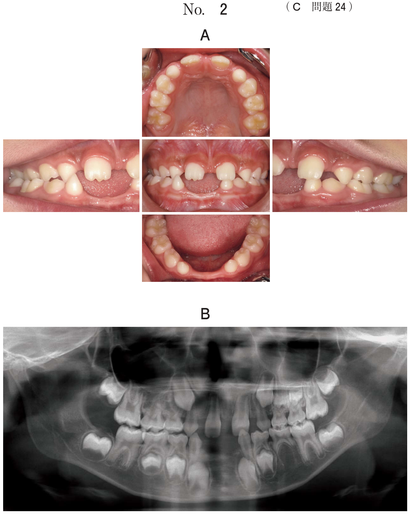

全身的症候
発熱
正常体温は腋窩温で36.0〜37.0℃。一般に腋窩体温が37.0℃を超えると発熱とされる。口腔内体温は腋窩体温に比べて0.2〜0.5℃、直腸体温は0.6〜1.0℃高い。
体温の高さによる分類
| 分類 | 体温 |
|---|---|
| 微熱 | 37.1〜38.0℃ |
| 軽度発熱 | 38.1〜38.5℃ |
| 中等度発熱 | 38.6〜39.9℃ |
| 高熱 | 39.1〜41.5℃ |
熱型の分類
| 熱型 | 特徴 | 関連疾患 |
|---|---|---|
| 稽留熱 | 日差が1℃以内の持続する高熱 | 腸チフス、大葉性肺炎 |
| 弛張熱 | 日差が1℃以上変化するが、37℃以下にならない | 急性化膿性炎、敗血症 |
| 間欠熱 | 日差が1℃以上変動し、最低が37℃以下になる | マラリア、胆道感染症 |
| 周期熱 | 周期的に発熱を繰り返す | マラリア、Hodgkinリンパ腫 |
| 波状熱 | 発熱と解熱を波状に繰り返す | ブルセラ症 |
- 弛張熱：日差1℃以上だが37℃以下にならない（常に発熱状態）
- 間欠熱：日差1℃以上で37℃以下になる（無熱期がある）
- 口腔内の急性化膿性炎では弛張熱を呈する
発熱の原因
- 感染症：最も多い
- 膠原病（自己免疫疾患）
- アレルギー性疾患
- 腫瘍：悪性腫瘍の壊死や産熱
- 代謝異常：甲状腺機能亢進症など
- その他：薬物性、悪性高熱、疑似発熱など
過去問：発熱
体温の変化を図に示す。 熱型はどれか。1つ選べ。

b 稽留熱
c 弛張熱
d 周期熱
e 波状熱
【解説】図から日差が1℃以内で持続する高熱のパターンを読み取る → 稽留熱。弛張熱は日差1℃以上、間欠熱は37℃以下に下がる時がある。
急性化膿性炎でみられるのはどれか。1つ選べ。
b 稽留熱
c 弛張熱
d 周期熱
e 波状熱
【解説】口腔内の急性化膿性炎（膿瘍など）では弛張熱を呈する。日差が1℃以上変動するが、37℃以下にはならない熱型である。稽留熱は腸チフスや大葉性肺炎、間欠熱はマラリア、波状熱はブルセラ症が代表的。
リンパ節腫脹
リンパ節腫脹の診察では、大きさ、数、硬さ、可動性、圧痛の有無、部位などを確認する。
リンパ節腫脹の性状と疾患
| 性状 | 考えられる疾患 |
|---|---|
| 圧痛あり、軟〜弾性軟 | 炎症性（感染症、反応性腫脹） |
| 硬い、可動性不良、癒着 | 癌の転移 |
| 弾性硬、多発性 | 悪性リンパ腫 |
| 乾酪壊死を伴う | 結核性リンパ節炎 |
リンパ節腫脹の原因
- 感染症：細菌感染、ウイルス感染（伝染性単核球症など）、結核
- 腫瘍性：癌の転移、悪性リンパ腫
- 肉芽腫性：サルコイドーシス、結核
- その他：薬物性、自己免疫疾患
リンパ節腫脹の原因として考えられるのはどれか。すべて選べ。
b 癌の転移
c 悪性リンパ腫
d 伝染性単核球症
e サルコイドーシス
【解説】すべてリンパ節腫脹の原因となる。結核（肉芽腫性リンパ節炎、a○）、癌の転移（転移性リンパ節腫脹、b○）、悪性リンパ腫（リンパ節原発の腫瘍、c○）、伝染性単核球症（EBウイルス感染による反応性リンパ節腫脹、d○）、サルコイドーシス（非乾酪性肉芽腫、e○）。
アミロイドーシス
アミロイドと呼ばれる線維状タンパク質が組織に沈着する疾患群。口腔領域では舌の腫大（巨舌症）を呈することがある。
診断
- Congo-Red染色：アミロイド沈着部が赤橙色に染まる
- 偏光顕微鏡下でapple-green birefringence（緑色複屈折）を呈する
- H-E染色ではアミロイドは均質な好酸性物質として描出される
舌の違和感を主訴として来院した患者の口腔内写真（別冊No.6B）、生検時のH-E染色病理組織像（別冊No.6B）及びCongo-Red 染色病理組織像（別冊No. 6C）を別に示す。 診断名はどれか。1つ選べ。

b 尋常性天疱瘡
c 正中菱形舌炎
d 口腔カンジダ症
e アミロイドーシス
【解説】Congo-Red染色が施されている時点でアミロイドーシスを疑う。Congo-Red染色でアミロイド沈着が赤橙色に染まり、偏光顕微鏡下で緑色複屈折を呈すれば確定診断となる。舌のアミロイド沈着により巨舌を呈する。
自己免疫性水疱症と抗体検査
口腔粘膜に水疱・びらんを生じる自己免疫疾患の鑑別には、特異的な自己抗体の検出が重要である。
疾患と対応する自己抗体
| 疾患 | 標的抗原 | 自己抗体 |
|---|---|---|
| 尋常性天疱瘡 | デスモグレイン3（粘膜型） デスモグレイン1+3（粘膜皮膚型） | 抗デスモグレイン抗体 |
| 類天疱瘡 | BP180（XVII型コラーゲン） BP230 | 抗BP180抗体 |
- 天疱瘡：上皮内水疱（棘融解）→ Nikolsky現象陽性、Tzanck細胞
- 類天疱瘡：上皮下水疱（基底膜部の自己免疫反応）
- 天疱瘡の方が重篤で予後不良
下唇の異常を主訴として来院した女性の口唇の写真（別冊No.33）を別に示す。2か月前からしみるような接触痛の出現と消退を繰り返しているという。 診断の確定に必要なのはどれか。2つ選べ。

b 抗BP180抗体
c 好中球機能検査
d マイコプラズマ抗体
e 抗デスモグレイン抗体
【解説】口唇のびらん・水疱を呈する自己免疫性水疱症の鑑別。天疱瘡（抗デスモグレイン抗体、e○）と類天疱瘡（抗BP180抗体、b○）の鑑別が必要。抗CCP抗体は関節リウマチ（a×）。マイコプラズマ抗体は肺炎の診断（d×）。
石灰化を伴う病変
口腔顎顔面領域で石灰化物を伴う病変は画像診断で偶発的に発見されることがある。
石灰化を伴う主な疾患
- 血管腫：静脈石（phlebolith）を伴うことがある
- 滑膜性骨軟骨腫症：顎関節内に石灰化した遊離体
- 結核性リンパ節炎：乾酪壊死後の石灰化
- 唾石症：唾液腺導管内の石灰化物
- 石灰化上皮性歯原性腫瘍（Pindborg腫瘍）：Liesegang輪
病変に石灰化物を伴うことがあるのはどれか。3つ選べ。
b 上皮真珠
c 顎放線菌症
d 滑膜性骨軟骨腫症
e 結核性リンパ節炎
【解説】血管腫は静脈石（phlebolith）を伴うことがある（a○）。滑膜性骨軟骨腫症は関節内の骨軟骨遊離体で石灰化する（d○）。結核性リンパ節炎は乾酪壊死後に石灰化を生じる（e○）。上皮真珠は新生児歯肉の上皮性嚢胞で石灰化は伴わない（b×）。顎放線菌症はdruse（菌塊）を形成するが石灰化とは異なる（c×）。